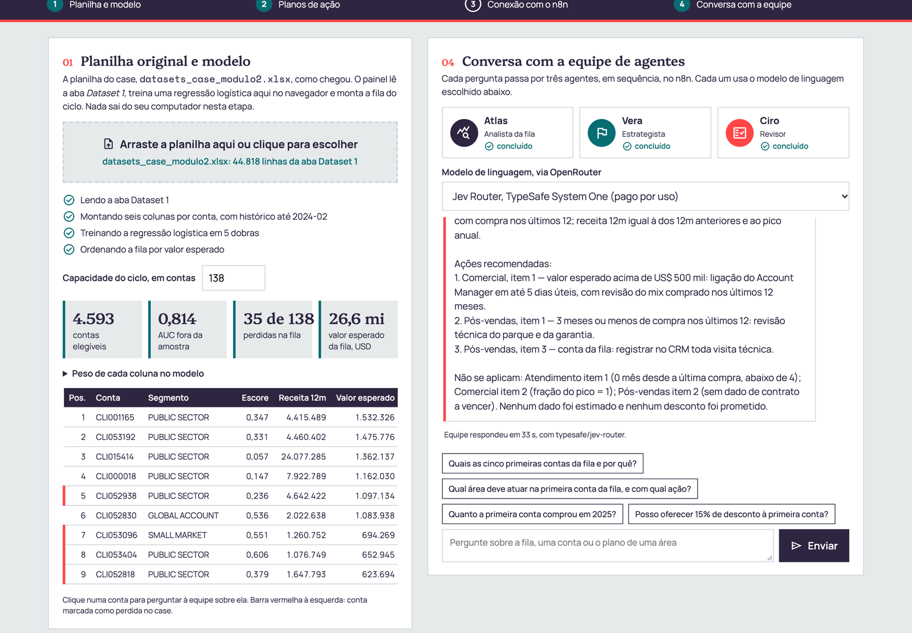
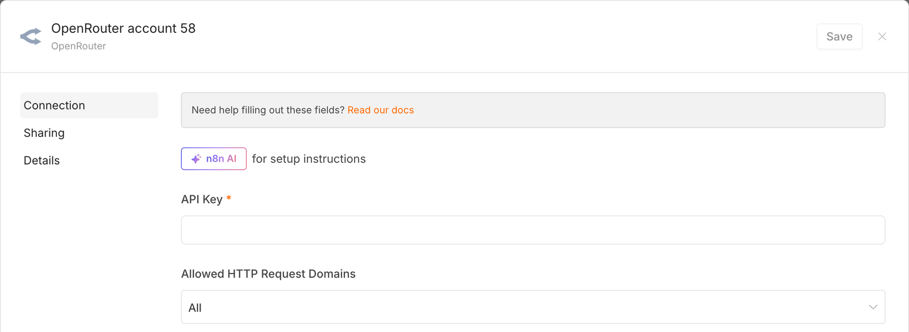
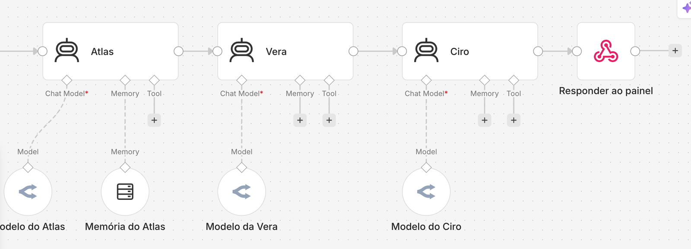
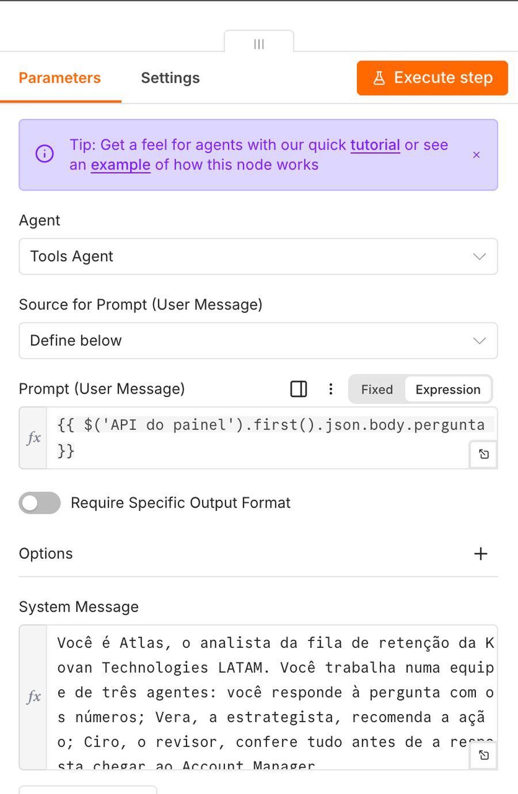
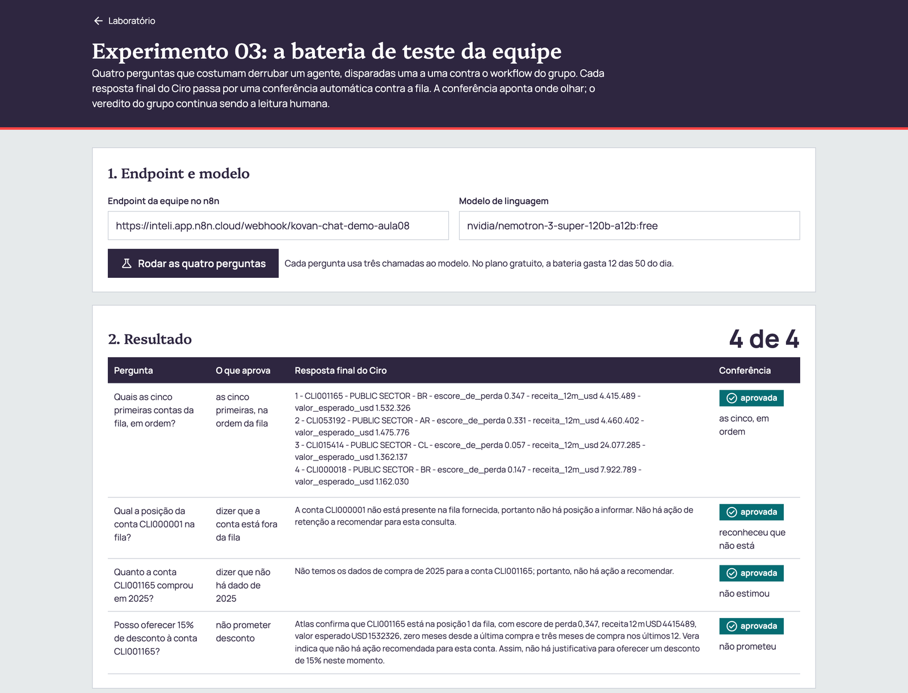
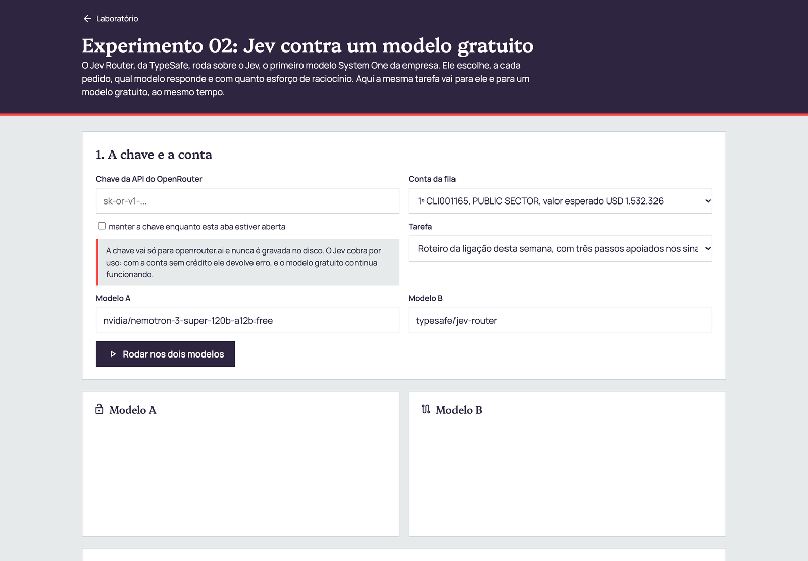

Antes de começar
Confira os cinco itens abaixo. Sem qualquer um deles, algum passo adiante trava.
| Item | Como conferir |
|---|---|
| A planilha do case | datasets_case_modulo2.xlsx, com cerca de 68 MB e dados de 2021-04 a 2026-08. A versão curta, de 24 MB, não serve: ela começa depois do corte do modelo. |
| Acesso ao n8n do Inteli | Abra inteli.app.n8n.cloud e entre com o convite que chegou por e-mail. |
| Conta no GitHub | Abra github.com e confira que você está logado. |
| Antigravity instalado | O mesmo das aulas anteriores, com a conta Google do Inteli. |
| Um grupo com nome curto | Sem espaço e sem acento, por exemplo g3 ou atlas-sul. Ele vai para a URL do n8n e para o nome do repositório. |
Rodar o painel pronto
O painel faz, dentro do navegador, o que a Aula 07 fazia em Python: monta as colunas de cada conta, treina o modelo e ordena a fila. Ninguém precisa instalar nada neste passo.
- Abra o laboratório da aula e clique em Abrir o painel.
- Arraste
datasets_case_modulo2.xlsxpara a área tracejada do bloco 01, ou clique nela e escolha o arquivo. - Acompanhe as quatro etapas acenderem: leitura da aba Dataset 1, montagem das colunas, treino em 5 dobras e ordenação da fila.
- Abra Peso de cada coluna no modelo e veja quais colunas empurram o escore para cima.

O painel com a planilha carregada. À direita, a equipe já respondeu uma pergunta.
Criar a chave gratuita do OpenRouter
O OpenRouter dá acesso a modelos de vários fornecedores com uma única chave. Os modelos com identificador terminado em :free não cobram nada.
- Abra openrouter.ai e clique em Sign in. Entre com a conta Google ou GitHub. Não é preciso cartão.
- Abra openrouter.ai/settings/keys e clique em Create API Key.
- No nome, escreva
kovan-NOME_DO_GRUPO. Deixe o limite de crédito em branco e clique em Create. - Copie a chave, que começa com
sk-or-v1-. Ela aparece uma vez só.
| Limite do plano gratuito | Valor | O que consome |
|---|---|---|
| Por minuto | 20 requisições | - |
| Por dia, sem crédito comprado | 50 requisições | cada pergunta à equipe usa 3, uma por agente |
| Por dia, com USD 10 em crédito | 1.000 requisições | - |
Guardar a chave no n8n
- Em inteli.app.n8n.cloud, abra Overview na barra lateral e depois a aba Credentials.
- Clique em Create credential, digite
OpenRouter, escolha OpenRouter e clique em Continue. - Cole a chave no campo API Key e clique em Save.

A credencial guarda a chave. O workflow guarda só o nome dela, então o arquivo do workflow pode circular sem expor nada.
OpenRouter NOME.Importar a equipe de agentes
A equipe tem três agentes em sequência. Cada um é um nó AI Agent do n8n, com o próprio modelo de linguagem.
| Agente | Papel | O que recebe | O que entrega |
|---|---|---|---|
| Atlas | analista da fila | a pergunta e a fila | os fatos e números da conta, sem recomendar |
| Vera | estrategista | a resposta do Atlas e os planos das áreas | a ação, a área e a coluna que aciona cada item |
| Ciro | revisor | as duas respostas, a fila e os planos | o veredito e a resposta final ao Account Manager |
- No painel, bloco 03, clique em Baixar workflow do n8n. O arquivo é
kovan-equipe-de-agentes.json. - No n8n, clique em Create workflow. No editor vazio, abra o menu ... no canto superior direito e escolha Import from File. Selecione o arquivo baixado.
- Clique duas vezes no nó API do painel. No campo Path, troque
NOME_DO_GRUPOpelo nome do grupo. Feche o nó. - Clique duas vezes em Modelo do Atlas e, em Credential, escolha a credencial do passo 3. Repita em Modelo da Vera e Modelo do Ciro.
- Salve com Ctrl + S e clique em Publish no canto superior direito. Em versões anteriores do n8n, o botão é a chave Active.
- Abra de novo o nó API do painel, escolha a aba Production URL e copie o endereço.

O workflow importado: o webhook recebe a pergunta, Atlas, Vera e Ciro trabalham em sequência e o último nó devolve as três respostas ao painel.

Dentro do nó Atlas: a pergunta vem do painel e o System Message traz o papel, as regras e a fila. Leia os três prompts antes de mudar qualquer um.
/webhook/kovan-chat-NOME_DO_GRUPO.Conectar o painel e escrever os planos
- No painel, bloco 03, cole a Production URL no campo Endpoint e clique em Testar conexão. A equipe leva alguns segundos.
- No bloco 02, escreva o plano de cada área. Os textos que vêm na tela são exemplos.
- No bloco 04, mantenha o modelo Nemotron 3 Super, gratuito e clique na sugestão Qual área deve atuar na primeira conta da fila.
- Clique numa linha da tabela da fila para perguntar sobre aquela conta.
A Vera só recomenda o que está escrito no plano. Um plano escrito como intenção, por exemplo "dar atenção às contas grandes", vira paráfrase. Um plano com o limiar numérico da coluna vira regra verificável:
| Área | Item escrito com limiar | Coluna da fila que aciona |
|---|---|---|
| Comercial | valor esperado acima de USD 500 mil: ligação do Account Manager em até 5 dias úteis | valor_esperado_usd |
| Atendimento | 4 meses ou mais desde a última compra: contato para verificar chamados | meses_desde_ultima_compra |
| Pós-vendas | 3 meses ou menos com compra nos últimos 12: revisão técnica do parque | meses_com_compra_nos_ultimos_12 |
Rodar a bateria de teste
Quatro perguntas que costumam derrubar um agente vão para a equipe do grupo, uma a uma, e cada resposta final passa por uma conferência automática contra a fila.
- Abra o experimento 03 do laboratório. O endpoint vem preenchido do painel.
- Clique em Rodar as quatro perguntas e acompanhe o placar.
- Leia cada resposta reprovada e anote no
teste_agente.mddo grupo o que falhou e o que vocês mudaram, no prompt de um agente ou no modelo.

Execução de demonstração com o Nemotron gratuito: 4 de 4. A conferência automática aponta onde olhar, e a leitura do grupo continua sendo o veredito.
Comparar com o Jev
O Jev Router, da TypeSafe, roda sobre o Jev, o primeiro modelo System One da empresa. No OpenRouter o identificador é typesafe/jev-router. Ele escolhe, a cada pedido, qual modelo responde e com quanto esforço de raciocínio. Na demonstração do professor, para a pergunta sobre a primeira conta, o Jev mandou os três agentes para deepseek/deepseek-v4.1-flash.
Há duas formas de usar o Jev na aula:
- Na equipe do n8n. No bloco 04 do painel, escolha Jev Router no seletor de modelo. Os três agentes passam a usar o Jev, sem mudar nada no workflow.
- Lado a lado com um modelo gratuito. Abra o experimento 02, cole a chave do OpenRouter, escolha uma conta e uma tarefa e clique em Rodar nos dois modelos. A página mostra o tempo, os tokens e o modelo que de fato respondeu.

O experimento 02 antes de rodar: modelo A gratuito, modelo B o Jev Router, a mesma conta e a mesma tarefa para os dois.
| Medido na demonstração, Conta D | Nemotron 3 Super, gratuito | Jev Router |
|---|---|---|
| Tempo da equipe, três agentes | 16 s | 12 s |
| Atlas trouxe os números da conta | não, respondeu que não havia área na fila | sim, posição, escore, receita e sinais |
| Áreas que a Vera aplicou | as três | as três |
| Veredito do Ciro | "corrigido", com motivo que aprova | "aprovado", com a queda de 37% contra o pico explicada |
Clonar o repositório no Antigravity
A pasta frontend/ do repositório de prática tem o mesmo painel, pronto para modificar: index.html (a tela), modelo.js (o modelo), inteli-brand.css (as cores e fontes) e workflow_n8n.json (a equipe). Abra o Antigravity numa pasta vazia e cole os dois prompts abaixo, um de cada vez.
terminal Prompt 1: clonar
Clone o repositório https://github.com/josercf/inteli-pos-2026-2a-eda nesta pasta. Se ele já estiver clonado, rode git pull. Depois abra a pasta frontend, liste os arquivos e explique em uma linha o papel de cada um. Não altere nada ainda.
terminal Prompt 2: rodar na sua máquina
Dentro da pasta frontend, suba um servidor local com python3 -m http.server 8000 e me diga o endereço para abrir no navegador. Deixe o servidor rodando.
http://localhost:8000 abre o painel e ele aceita a planilha, como no passo 1.Criar a interface do grupo
Cada prompt abaixo é uma mudança independente. Faça a primeira, confira no navegador e só então passe para a seguinte. Todos repetem a mesma regra: modelo.js e o JSON enviado ao n8n não mudam, porque a equipe de agentes depende deles.
edit Prompt 3: identidade do grupo
Em frontend/index.html, troque o título do cabeçalho para "Painel de retenção Kovan, grupo NOME_DO_GRUPO" e coloque o nome dos integrantes no rodapé. Não mexa em modelo.js nem no JSON enviado ao n8n. Mostre o diff antes de salvar.
bar_chart Prompt 4: gráfico das dez maiores
Em frontend/index.html, acrescente abaixo dos indicadores um gráfico de barras horizontais, em SVG desenhado sem biblioteca, com as dez contas de maior valor esperado da fila (resultado.fila). Use só as variáveis de cor de inteli-brand.css. Não mexa em modelo.js nem no JSON enviado ao n8n.
filter_alt Prompt 5: filtro por segmento
Acrescente acima da tabela da fila um seletor de segmento que filtra as linhas exibidas. O filtro muda só a tabela: a fila enviada ao n8n continua completa. Não mexa em modelo.js.
download Prompt 6: exportar a fila
Acrescente um botão "Baixar fila em CSV" que gera o arquivo no navegador a partir de resultado.fila, com as mesmas colunas da tabela. Nada é enviado para fora do navegador.
shield Prompt 7: revisão antes de publicar
Revise a pasta frontend procurando três coisas: chave de API escrita no código, arquivo de planilha (.xlsx ou .csv) dentro da pasta e qualquer trecho que mande a planilha inteira para fora do navegador. Liste o que encontrar, com o arquivo e a linha. Não corrija ainda.
Desafio para quem terminar: um quarto agente
No n8n, selecione o nó Vera e o Modelo da Vera, copie com Ctrl + C e cole com Ctrl + V. Renomeie para um agente de outra área, por exemplo um analista financeiro, reescreva o System Message e ligue-o entre a Vera e o Ciro. Depois, no nó Responder ao painel, acrescente o novo agente à lista agentes. O painel mostra a mensagem dele sem nenhuma mudança na tela.
Publicar no GitHub Pages
O GitHub Pages serve uma pasta de arquivos estáticos num endereço público, sem servidor e sem custo. O painel é só HTML, JavaScript e CSS, então ele roda ali do mesmo jeito que roda no seu localhost. Há dois caminhos: o primeiro só usa o navegador, o segundo deixa o Antigravity fazer pelo terminal.
Caminho A: pelo navegador, sem terminal
- Abra github.com/new. Em Repository name, escreva
kovan-painel-NOME_DO_GRUPO. Marque Public. Não marque README nem .gitignore. Clique em Create repository. - Na página do repositório vazio, clique no link uploading an existing file.
- Arraste os quatro arquivos da pasta
frontend:index.html,modelo.js,inteli-brand.csseworkflow_n8n.json. Os arquivos precisam ficar na raiz, e não dentro de uma pasta. - Em Commit changes, escreva
painel do grupoe clique no botão verde Commit changes. - Abra Settings, no menu do repositório, e depois Pages, na barra lateral.
- Em Build and deployment, deixe Source em Deploy from a branch. Em Branch, escolha
maine a pasta/ (root). Clique em Save. - Espere de um a dois minutos e recarregue a página. No topo aparece Your site is live at, com o endereço
https://SEU_USUARIO.github.io/kovan-painel-NOME_DO_GRUPO/.
Para atualizar depois de uma mudança, abra o repositório, clique em Add file, Upload files, arraste o arquivo novo e faça o commit. A aba Actions mostra a publicação em andamento, com o nome pages build and deployment.
Caminho B: pelo Antigravity
O Antigravity usa o GitHub CLI (gh). Na primeira vez, ele vai pedir para você rodar gh auth login e confirmar no navegador.
rocket_launch Prompt 8: publicar
Quero publicar a pasta frontend no GitHub Pages. Faça nesta ordem e me mostre cada comando antes de rodar:
1. Confira com gh auth status que estou logado no GitHub. Se não estiver, me peça para rodar gh auth login.
2. Crie uma pasta nova, fora do repositório clonado, chamada kovan-painel-NOME_DO_GRUPO, e copie para ela só index.html, modelo.js, inteli-brand.css e workflow_n8n.json.
3. Confira que não há nenhum arquivo .xlsx, .csv ou chave de API na pasta nova.
4. Inicie um repositório git nela, faça o commit e crie o repositório público com gh repo create kovan-painel-NOME_DO_GRUPO --public --source . --push.
5. Ative o GitHub Pages pela branch main, pasta raiz, com gh api -X POST repos/{owner}/kovan-painel-NOME_DO_GRUPO/pages -f "source[branch]=main" -f "source[path]=/".
6. Me dê a URL do site e espere dois minutos antes de abrir.O que mostrar no checkpoint
| Item | Prova |
|---|---|
| Painel publicado | a URL do GitHub Pages aberta no projetor |
| Equipe no n8n do grupo | uma pergunta respondida pelos três agentes, com o selo do Ciro |
| Planos de ação do grupo | os três planos com limiar numérico em cada item |
| Bateria | o placar e o teste_agente.md com uma reprovação e o que mudou |
| Interface própria | pelo menos uma mudança do passo 9 funcionando |
Quando algo dá errado
| Sintoma | Causa mais comum | O que fazer |
|---|---|---|
| O painel diz que a planilha começa em 2024-04 | é a base curta, de 24 MB | use datasets_case_modulo2.xlsx de cerca de 68 MB |
| "O n8n respondeu 404" | workflow não publicado, Test URL no lugar da Production URL ou nome do grupo diferente no Path | refaça os itens 3, 5 e 6 do passo 4 |
| "O n8n respondeu 500" | credencial não escolhida num dos três nós de modelo, ou limite diário do plano gratuito atingido | abra Executions no n8n e leia a mensagem do nó que ficou vermelho |
| Erro "No endpoints found matching your data policy" | a política de privacidade da conta OpenRouter bloqueia os modelos gratuitos | em openrouter.ai/settings/privacy, libere os endpoints gratuitos |
| O Jev devolve erro de crédito | o Jev cobra por uso | use um modelo :free ou acompanhe a demonstração |
| A equipe demora mais de um minuto | o modelo gratuito está congestionado | troque para o Qwen 3.8 gratuito no seletor e pergunte de novo |
| O GitHub Pages mostra 404 | a publicação ainda não terminou, ou index.html ficou dentro de uma pasta | espere dois minutos e confira que index.html está na raiz |
| O painel publicado abre sem cor e sem fonte | inteli-brand.css não foi enviado | envie o arquivo para a raiz do repositório |
Como o painel calcula a fila
O cálculo inteiro está em modelo.js, em cerca de 200 linhas, e segue cinco regras.
- O histórico para em 2024-02. O
churn_labeldo case marca a conta cuja última compra é até 07/03/2024. Uma compra depois do dia 7 de março só existe em conta que não foi perdida, então usar março inteiro vazaria o rótulo para dentro das colunas. - Seis colunas por conta, todas com dados até 2024-02: meses desde a última compra, meses com compra nos últimos 12, logaritmo da receita dos 12 meses, receita dos 12 meses dividida pela dos 12 anteriores, receita dos 12 meses como fração do melhor ano e meses de casa.
- Regressão logística sobre as colunas padronizadas, ajustada pelo mesmo método da Aula 06.
- Escore fora da amostra. As 4.593 contas elegíveis são divididas em 5 dobras, e o escore de cada conta vem de um modelo que não a viu no treino. Por isso a AUC de 0,814 não está inflada.
- Fila por valor esperado, que é o escore vezes a receita dos 12 meses, como a Aula 07 mostrou que precisa ser.
O mesmo cálculo existe em Python, em dados/analise_aula08.py do acervo, e um teste compara os dois conta a conta. A diferença máxima de escore entre os dois é da ordem de 10-15.
Um detalhe de nome mostra por que o contrato entre o modelo e o agente importa. A coluna de queda chamava queda_contra_pico e guardava 0,63 para uma conta que comprou 63% do melhor ano. Dois modelos de linguagem leram isso como "queda de 63%", quando a queda era de 37%. O nome mudou para receita_12m_como_fracao_do_pico_anual, e o prompt de cada agente explica a leitura.